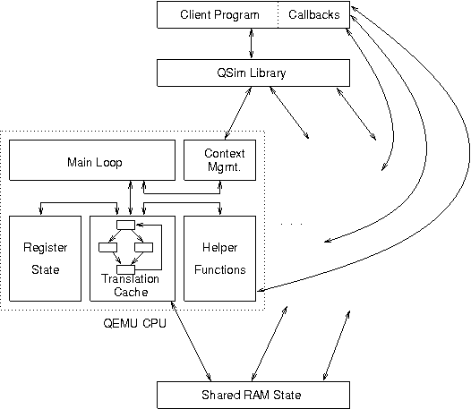

QSim is a project which aims, as part of the Manifold simulation effort at Georgia Tech, to create a thread safe multicore emulation library based on the QEMU emulator. QSim provides instruction-level control of the emulated environment and detailed information about the executing instruction stream. X86 Linux guests are supported with hundreds of emulated hardware contexts, each of which can run in an independent host thread. Applications of QSim include trace-gathering, multithreaded software development, and its primary target: microarchitecture simulation.

Diagram of QSim software architecture, showing major components and data flow between them.
QSim requires an x86-64 Linux host to run and currently only supports x86-32 Linux guests.
This work was supported by Sandia National Laboratories and the National Science Foundation.
The QSim User Guide is the best source of information on the QSim project and includes API documentation, a description of the source directory structure, and a discussion of a simple example program.
Several presentations have been given on QSim in the years since its inception.
The following people are directly involved with the QSim project:
Releases can be found here. The most recent of these is your best bet for getting a stable QSim system running.
The most recent code can always be found on the SST Google Code repository, and downloaded with:
svn checkout https://sst-simulator.googlecode.com/svn/qsim/trunk qsim
For instructions on building QSim, see the file INSTALL in the root source directory. This is a brief runlog of commands needed to get QSim running.
Those interested in QSim development can subscribe to the QSim mailing list here. TRAC is intended to be used to manage feature requests and bug reports. To request a login, please contact Chad.